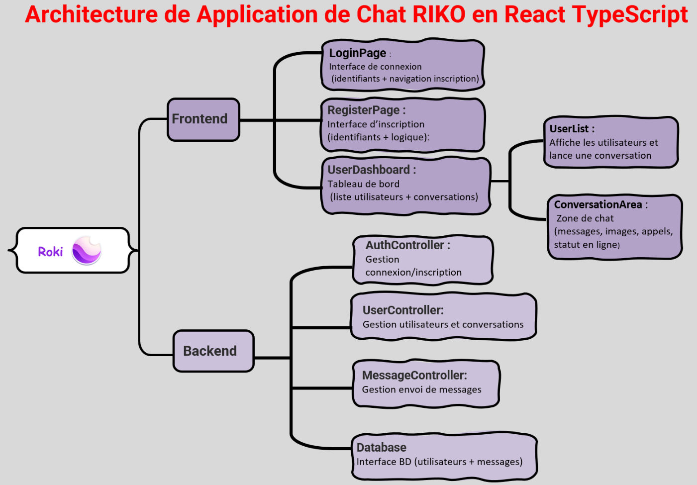
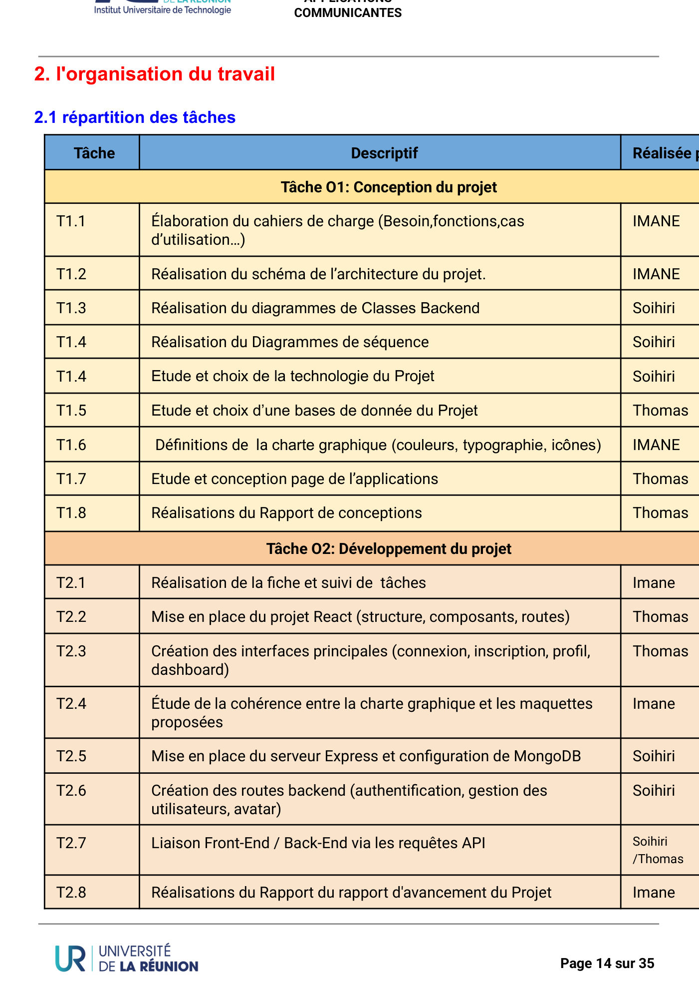
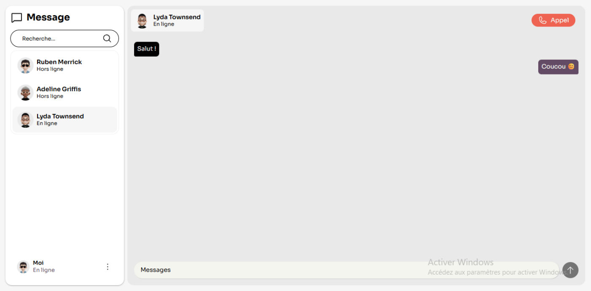
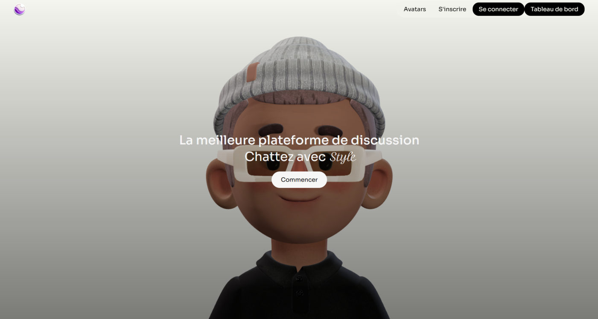
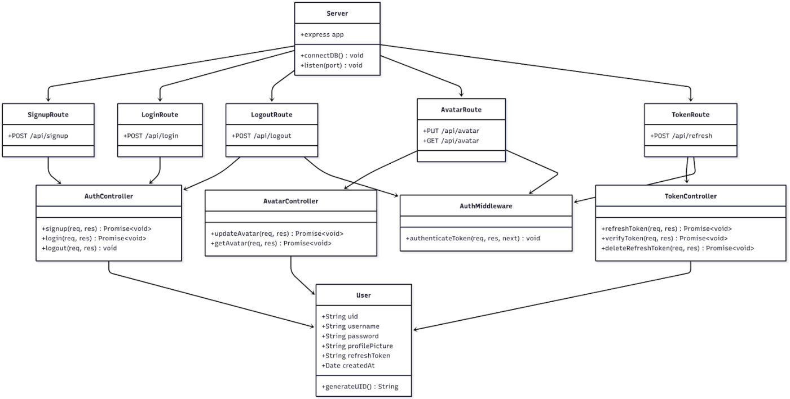
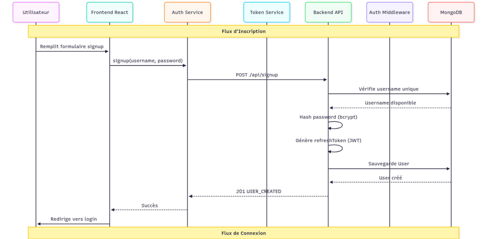

Développer des applications communicantes : Moki
« Moins de mails, plus de Moki » : une plateforme de communication en temps réel pensée pour le travail de groupe entre étudiants.
Équipe : Équipe de 3 : ABDOU Imane (responsable compte rendu), HOARAU Thomas (développement front-end), HOUMADI Soihiri (développement back-end, chef d'équipe)

Contexte et objectif
Contexte
Les étudiants en TP de groupe perdent du temps entre mails, SMS et autres supports. Moki, application imaginée par Soihiri HOUMADI, doit centraliser échanges, images et appels.
Objectif
Créer une application simple et efficace, accessible à tous, avec comptes sécurisés, messagerie instantanée, partage d'images et appels vocaux, sur des bases solides pour ajouter de nouvelles fonctionnalités.
Ma mission
Mon rôle
Responsable du compte rendu, j'ai porté la conception fonctionnelle et le pilotage documentaire du projet :
- Rédaction du cahier des charges : besoins, fonctionnalités, cas d'utilisation (T1.1)
- Réalisation du schéma d'architecture de l'application (T1.2)
- Définition de la charte graphique : couleurs, typographie, icônes (T1.6) et contrôle de sa cohérence avec les maquettes (T2.4)
- Création de la fiche de suivi des tâches (T2.1) et rédaction des rapports d'avancement et final (T2.8, T3.6)
- Participation aux tests end-to-end : inscription, connexion, avatar, renouvellement de token (T3.3)
Travaux réalisés
Conception
Cahier des charges, architecture, diagrammes de classes et de séquence, choix technologiques et base de données, maquettes sur Lunacy.
Développement
Projet React structuré (components, hooks, pages, contexts), serveur Express connecté à MongoDB Atlas, routes d'authentification et d'avatar, liaison front / back par API.
Sécurité
Mots de passe hachés (bcrypt), jetons JWT d'accès (30 min) et de rafraîchissement (7 jours), routes protégées par middleware, CORS configuré.
Tests et finalisation
Tests unitaires front et back, tests end-to-end, corrections de bugs puis rapport final.
Outils et technologies
Illustrations du projet
Images extraites du rapport. Cliquez pour agrandir.





Difficultés et solutions
Résultats obtenus
- Inscription, connexion et gestion des jetons JWT fonctionnelles
- Tableau de bord avec conversations, recherche d'utilisateur et statut en ligne
- Toutes les tâches du planning marquées « Terminé », rapports remis dans les délais
Compétences développées
Compétences
- Rédaction d'un cahier des charges
- Modélisation d'une architecture applicative
- Gestion de projet et suivi d'équipe
- Compréhension d'une application client-serveur sécurisée
- Tests fonctionnels end-to-end
Ce que ce projet m'a apporté
Ce projet m'a placée à l'interface entre le besoin et la technique : traduire une idée en spécifications, organiser l'équipe et documenter, des compétences clés en conduite de projet.
Envie d'aller plus loin ?
Le document complet détaille toutes les configurations, mesures et analyses.